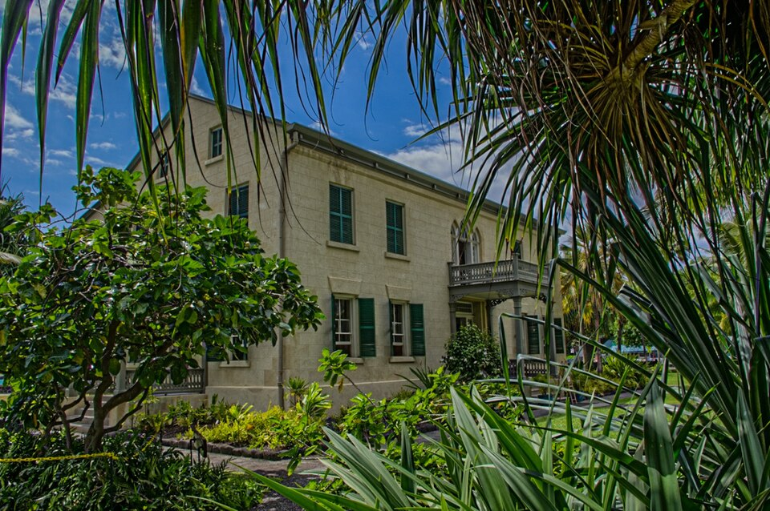

Huliheʻe Palace
Place: Huliheʻe Palace, Kailua-Kona, Hawaiʻi Island
Type: Historic royal residence / palace museum / cultural landmark
Namesake: Huliheʻe ("turn and flee"), traditionally associated with enemies retreating in the face of Kona's powerful chiefs
Story it tells: How a grand residence built in 1838 by Governor John Adams Kuakini became a retreat for Hawaiian royalty, a home of Princess Ruth Keʻelikōlani, and a treasured historic landmark preserved by the Daughters of Hawaiʻi.

Huliheʻe Palace stands along Aliʻi Drive in historic Kailua-Kona, overlooking the waters of Kailua Bay. Its name is interpreted as "turn and flee," is traditionally associated with enemies retreating in the face of Kona's powerful chiefs. Built in 1838 by High Chief John Adams Kuakini, governor of Hawaiʻi Island and brother of Queen Kaʻahumanu, the palace occupies land known as Kalākeʻe, once a residence of Kamehameha the Great. Kuakini constructed the grand two-story residence from lava rock, incorporating Western architectural influences and creating an impressive home for entertaining dignitaries and members of Hawaiian royalty.
Following Kuakini's death in 1844, Huliheʻe Palace passed through the hands of aliʻi before becoming the residence of Princess Ruth Keʻelikōlani, one of the kingdom's wealthiest and most influential chiefesses. Princess Ruth used the palace for entertaining guests, bu preferred to live in a traditional grass house called Haleʻōlelo, which stood on the grounds. Her choice reflected her deep attachment to Hawaiian customs at a time when Western lifestyles were embraced by the kingdom's ruling families. On May 24, 1883, Princess Ruth died at Haleʻōlelo, leaving behind a vast estate and a remarkable legacy.
Princess Ruth bequeathed Huliheʻe Palace to her cousin, Princess Bernice Pauahi Bishop, who died the following year in 1884. King David Kalākaua and Queen Kapiʻolani subsequently acquired the property and used it as a royal retreat. In 1885, Kalākaua renovated the palace, plastering its lava-rock walls, enlarging the oceanfront lanais, and adding Victorian architectural details. He also renamed the property Hikulani Hale, meaning "House of the Seventh Ruler," reflecting his place as the Hawaiian Kingdom's seventh monarch. Despite the change, the historic name Huliheʻe would return and stay.
After Kalākaua's death in 1891, the palace passed to Queen Kapiʻolani and eventually to Princes Jonah Kūhiō Kalanianaʻole and David Kawānanakoa. The princes sold the property in 1914 to Bathsheba Allen, whose death shortly afterward left the residence unoccupied for more than a decade. By the 1920s, the aging palace had fallen into serious disrepair and faced the possibility of demolition. Recognizing its historical importance, the Daughters of Hawaiʻi and other supporters successfully advocated for its preservation. The Territory of Hawaiʻi acquired the property in 1925 and placed it under the care of the Daughters of Hawaiʻi in 1927.
Following substantil restoration work, Huliheʻe Palace opened as a historic house museum in 1928. Its six rooms preserve royal furnishings, koa wood furniture, portraits, featherwork, kapa, and other objects associated with Hawaiʻi's ruling families. Among its most distinctive exhibits are personal belongings of Princess Ruth Keʻelikōlani, including her koa bedstead. The palace was listed on the National Register of Historic Places in 1973 and underwent additional restoration following damage from the 2006 Hawaiʻi earthquakes.
Today, Huliheʻe Palace remains one of Hawaiʻi's most significant surviving royal residences and a landmark of Kailua-Kona's historic waterfront. Still maintained by the Daughters of Hawaiʻi, the museum offers visitors a glimpse into the lives of the aliʻi who shaped the Hawaiian Kingdom.